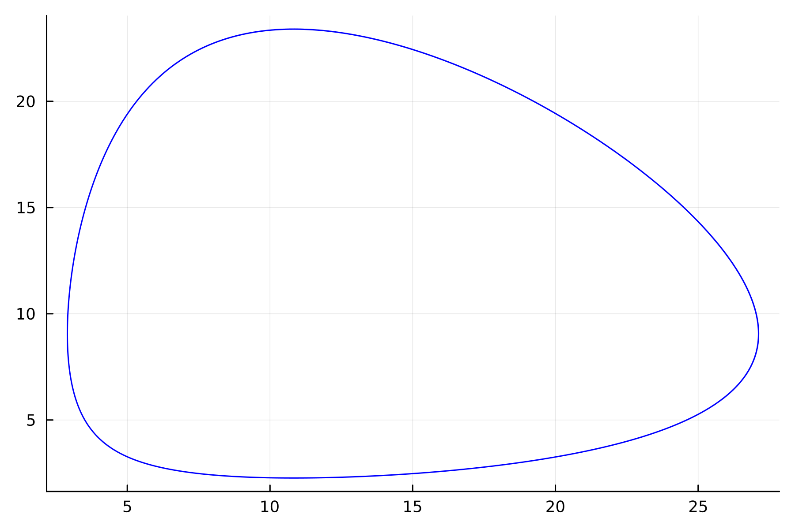

{ #fig:001 width=70% height=70% }
{ #fig:001 width=70% height=70% }lang: ru-RU title: Лабораторная работа номер 5 author: Куденко Максим date: 01.03.2024
toc: false slide_level: 2 theme: metropolis header-includes:
Изучить жесткую модель хищник-жертва и построить эту модель.
Данная двувидовая модель основывается на следующих предположениях:
$$
\begin{cases}
\frac{dx}{dt} = (-ax(t) + by(t)x(t))
\
\frac{dy}{dt} = (cy(t) - dy(t)x(t))
\end{cases}
$$
В этой модели $x$ – число жертв, $y$ - число хищников. Коэффициент $a$ описывает скорость естественного прироста числа жертв в отсутствие хищников, $с$ - естественное вымирание хищников, лишенных пищи в виде жертв. Вероятность взаимодействия жертвы и хищника считается пропорциональной как количеству жертв, так и числу самих хищников ($xy$). Каждый акт взаимодействия уменьшает популяцию жертв, но способствует увеличению популяции хищников (члены $-bxy$ и $dxy$ в правой части уравнения).
Математический анализ этой (жёсткой) модели показывает, что имеется стационарное состояние, всякое же другое начальное состояние приводит к периодическому колебанию численности как жертв, так и хищников, так что по прошествии некоторого времени такая система вернётся в изначальное состояние.
Стационарное состояние системы (положение равновесия, не зависящее от времени решения) будет находиться в точке $x_0=\frac{c}{d}, y_0=\frac{a}{b}$. Если начальные значения задать в стационарном состоянии $x(0) = x_0, y(0) = y_0$, то в любой момент времени численность популяций изменяться не будет. При малом отклонении от положения равновесия численности как хищника, так и жертвы с течением времени не возвращаются к равновесным значениям, а совершают периодические колебания вокруг стационарной точки. Амплитуда колебаний и их период определяется начальными значениями численностей $x(0), y(0)$. Колебания совершаются в противофазе.
Построить график зависимости численности хищников от численности жертв
Построить график зависимости численности хищников и численности жертв от времени
Найти стационарное состояние системы
Вариант 59:
Для модели «хищник-жертва»:
$$
\begin{cases}
\frac{dx}{dt} = -0.48x(t) + 0.053y(t)x(t)
\
\frac{dy}{dt} = 0.52y(t) - 0.048y(t)x(t)
\end{cases}
$$
Постройте график зависимости численности хищников от численности жертв, а также графики изменения численности хищников и численности жертв при следующих начальных условиях: $x_0=6, y_0=21$ Найдите стационарное состояние системы.
Код программы для нестационарного состояния:
{ #fig:001 width=70% height=70% }
Код программы для стационарного состояния:
{ #fig:002 width=70% height=70% }
{ #fig:003 width=70% height=70% }
 { #fig:004 width=70% height=70% }
{ #fig:004 width=70% height=70% }
 { #fig:005 width=70% height=70% }
{ #fig:005 width=70% height=70% }
Код программы для нестационарного состояния:
 { #fig:006 width=70% height=70% }
{ #fig:006 width=70% height=70% }
Код программы для стационарного состояния:
 { #fig:007 width=70% height=70% }
{ #fig:007 width=70% height=70% }
{ #fig:008 width=70% height=70% }
 { #fig:009 width=70% height=70% }
{ #fig:009 width=70% height=70% }
 { #fig:010 width=70% height=70% }
{ #fig:010 width=70% height=70% }
В итоге проделанной работы мы построили график зависимости численности хищников от численности жертв, а также графики изменения численности хищников и численности жертв на языках Julia и OpenModelica. Построение модели хищник-жертва на языке openModelica занимает меньше строк, чем аналогичное построение на Julia.
В ходе выполнения лабораторной работы была изучена модель хищник-жертва и построена модель на языках Julia и Open Modelica.